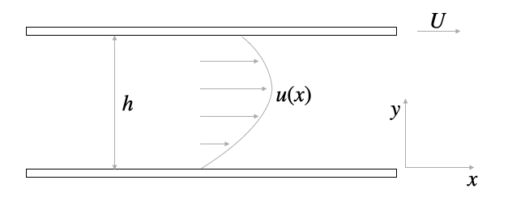

Reynolds Number
Contents
This page was generated from notebooks/L18/1_Reynolds_Number.ipynb.

Reynolds Number#
[9]:
import numpy as np
import matplotlib.pyplot as plt
from numpy.linalg import norm
from scipy.constants import c,epsilon_0,e,physical_constants
from IPython.display import YouTubeVideo
import json
%config InlineBackend.figure_format = 'retina'
with open('style.json', 'r') as fp:
style = json.load(fp)
plt.rcParams.update(style)
Hydrodynamics is full of dimensionless number, mainly also due to its relevance for engineering. For example, you may want to compare the flow around the same object at large and small scales. Ideally, you could just build a model of a small airplane and study the flow field around the small airplane in a lab, as it is naturally less expensive than studying it on a large one.
A number which is useful with this respect is the Reynold number, which tells of how to scale the flow velocity when scaling the object.
To obtain the Reynold number and its meaning, we introduce a Navier Stokes equation with dimensionless quatities. These use characteristic dimensions of the system to rescale. We use
\begin{eqnarray} x&=&x^{\prime} L\\ \vec{u}&=&\vec{u}^{\prime} U\\ t&=&t^{\prime} \frac{L}{U} \end{eqnarray}
for the rescaling, where \(L\) is the characteristic size of the object, \(U\) a characteristic velocity and \(L/U\) the characteristic time for a fluid volume element to pass the object of size \(L\). Using these quantities, the differential operators turn into
\begin{eqnarray} \nabla &=& \frac{\nabla^{\prime}}{L}\\ \frac{\partial}{\partial t} &=& \frac{\partial}{\partial t^{\prime}}\frac{U}{L}\\ p&=&p^{\prime} U^2/\rho \end{eqnarray}
Using these relations in the Navier Stokes equation
\begin{equation} \rho \left [ \frac{\partial }{\partial t} +(\vec{u}\nabla)\right]\vec{u}=-\nabla p +\eta \Delta \vec{u} \end{equation}
yields
\begin{equation} \rho \left [ \frac{\partial }{\partial t^{\prime}}\frac{U}{L} +U\left (\vec{u}^{\prime}\frac{\nabla^{\prime}}{L}\right)\right]\vec{u}^{\prime}U=-\frac{\nabla^{\prime}}{L}p^{\prime} U^2 \rho +\eta \frac{1}{L^2}\Delta^{\prime} \vec{u}^{\prime} \end{equation}
Dividing the previous equation by \(\rho U^2/L\) gives us the dimensionless Navier-Stokes equation
\begin{equation} \left [\frac{\partial }{\partial t^{\prime}} +\vec{u}^{\prime} \nabla \right ]\vec{u}^{\prime}=-\nabla p^{\prime} +\frac{1}{\rm Re}\Delta \vec{u}^{\prime} \end{equation}
where
\begin{equation} {\rm Re}=\frac{\rho}{\eta}U L \tag{Reynolds number} \end{equation}
is the Reynolds number. This number now tells us, that if we scale the size of the object by a factor of 2, we have to increase the velocity by a factor of two to get the same flow field as for the larger object. This is probably not what we would have simply anticipated by our intuition.
The Reynolds number has also a very important meaning for the classification of flows. It may help you to make a distinction between the realm of turbulent and laminar flow. When we start just start from the stationary Navier Stokes equation
\begin{equation} \rho \left [(\vec{u}\nabla)\right]\vec{u}=-\nabla p +\eta \Delta \vec{u} \end{equation}
we can also make a dimension analysis with the help of the individual quantities. In this way we find
\begin{equation} \underbrace{\rho \frac{U^2}{L}}_{\rm inertia}=-\nabla p +\underbrace{\eta \frac{U}{L^2}}_{\rm viscous} \end{equation}
where the left side correspopnds to the inertial and the right side to the viscous force densities. If we compare the intertial to the viscous force densities, we obtain
\begin{equation} \frac{\rho \frac{U^2}{L}}{\eta \frac{U}{L^2}}=\rho\frac{U L}{\eta})={\rm Re} \end{equation}
which is just the Reynolds number. Thus large Reynolds numbers (\({\rm Re >1}\)) state that inertia are important as compared to viscous forces and the flow may be turbulent. Otherwise, for \({\rm Re}<1\), viscous forces dominate the flow and the flowfield will always be laminar.
[68]:
YouTubeVideo('_dbnH-BBSNo', width=800, height=600)
[68]:
Stokes Equation#
In the realm of very small Reynolds number we may even neglect the inertial terms in the Navier Stokes equation and obtain just the Stokes equation
\begin{equation} 0= -\nabla p+\eta \Delta \vec{u}+\vec{f}\tag{Stokes Equation} \end{equation}
with the incompressibility condition
\begin{equation} \nabla \cdot \vec{u}=0 \end{equation}
Solutions of the Stokes Equation#
The Stokes equation is easier to solve than the Navier-Stokes equation as it has no time dependence. This also means that it is time symmetric and the a reversal of the motion of an object typically also creates a reversed flow field. This is very important for example for micro-organisms that would like to swim in water. Due to their small dimension they live at low Reynolds numbers and every symmetric motion they take is just yielding a wiggeling back and forth but no net motion. They therefore have to come up with some time-asymmetric motion to swim. This is summarized in a theorem that has been put forward by Edward Purcell. We will talk about this later.
We would first like to obtain two general solutions for the flow field from the Stokes equation and thereby consider two solid surfaces which confine a water film of height \(h\) according to the drawing below.
We chose the ccordinate system in the way that the horizontal axis is the \(x\)-axis and the vertical one the \(y\)-axis. In two dimensions the Stokes equation is now the following
\begin{equation} \eta \frac{d^2 u}{d y^2 }=\frac{dp}{dx} \end{equation}
without any external forces. We can readily integrate the both sides two times
\begin{equation} \int\frac{d^2 u}{d y^2 }=\frac{1}{\eta}\int \frac{dp}{dx} \end{equation}
which results in
\begin{equation} \int\frac{d u}{d y}=\int \left [ \frac{1}{\eta} \frac{dp}{dx}y+C_1 \right ] dy \end{equation}
and finally gives
\begin{equation} u(y)=\frac{1}{2\eta}\frac{dp}{dx}y^2+ C_1 y+ C_2 \end{equation}
where \(C_1\) and \(C_2\) are integration constants, which we have to determine from the boundary conditions.
We assume the following no-slip boundary conditions
\begin{equation} u(y=0)=0 \end{equation}
and
\begin{equation} u(y=h)=U \end{equation}
With the help of these we obtain
\begin{equation} u(y)=\frac{1}{2\eta}\frac{dp}{dx}y(y-h)+\frac{Uy}{h} \end{equation}
for the flow profile of the liquid film.
We can now recognize two different solutions in the flow field.
Couette Flow - Shear Driven Flow#
To obtain a flow field purely driven by shear, we assume that \(\frac{dp}{dx}=0\), which is leaving a flow velocity which linearly increases with the position \(y\)
\begin{equation} u(y)=U\frac{y}{h} \end{equation}
[54]:
plt.figure(figsize=(6,4))
plt.axhline(y=0,linestyle="--")
plt.axhline(y=1,linestyle="--")
[plt.arrow(0.5,y,y*0.31-0.03,0,head_width=0.02) for y in np.arange(0.1,1.1,0.1)]
y=np.arange(0,1.1,0.1)
plt.plot(y*0.31/1+0.5,y)
plt.ylim(-0.1,1.1)
plt.xlim(0,1)
plt.xlabel("position x ")
plt.ylabel("position y ")
plt.show()
Poiseuille Flow - Pressure Driven Flow#
If we assume that both boundaries are at rest in the laboratory frame and the pressure gradient along the x-axis is constant, we find a parabolic flow field, which is typical for pressure driven flows.
\begin{equation} u(y)=\frac{1}{2\eta}\frac{dp}{dx}y(y-h) \end{equation}
[56]:
plt.figure(figsize=(6,4))
plt.axhline(y=0,linestyle="--")
plt.axhline(y=1,linestyle="--")
[plt.arrow(0.5,y,-y*(y-1)-0.03,0,head_width=0.02) for y in np.arange(0.1,1.,0.1)]
y=np.arange(0,1.1,0.1)
plt.plot(-y*(y-1)+0.5,y)
plt.ylim(-0.1,1.1)
plt.xlim(0,1)
plt.xlabel("position x ")
plt.ylabel("position y ")
plt.show()